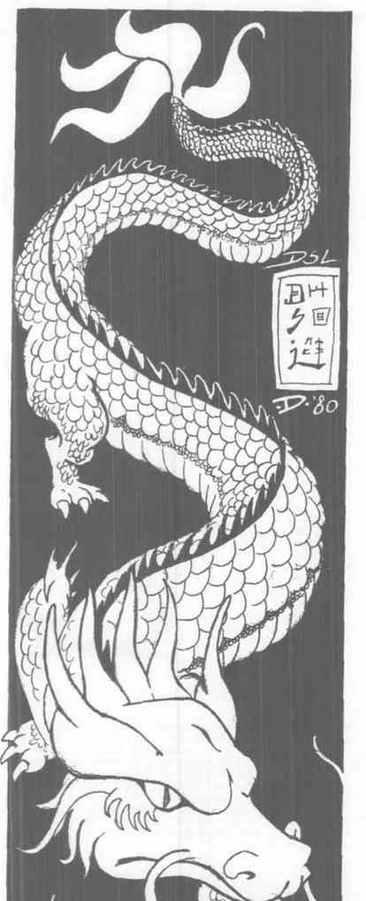
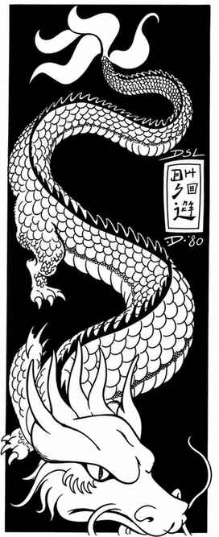

雷霆大臣、冥王与空气精灵 · Wen Chung、Yen-Wang-Yeh 与空气精灵
Wen Chung（闻仲，雷电大臣） 是混乱中立半神，AC −2，213 点生命值。他有三只眼睛，为 Lei Kung 和混乱信徒召唤天气；第三只眼每天十次射出 20 点闪电，+3 长剑造成 3–30 点伤害，并免疫闪电、寒冷和光明攻击。
Yen-Wang-Yeh（阎王，死者审判官） 是中立强大神，AC −5，349 点生命值，魔法抗性 75%。他收集亡者灵魂，确保它们前往正确位面；任何触碰其身体的生物都会麻痹。他能变成东方龙，以死亡射线和 +3 宽刃剑作战。
空气精灵 很少见，每次可出现 1–100 个，拥有黑皮肤、蝠翼、爪足和猴首，AC 4、每只 50 点生命值、魔法抗性标准，常被风神召来作为 11 HD 怪物作战。


上一节：贼神、风海神与北斗女神 · No Cha、Shan Hai Ching 与 Tou Mu
下一节：埃及神话 · Egyptian Mythos